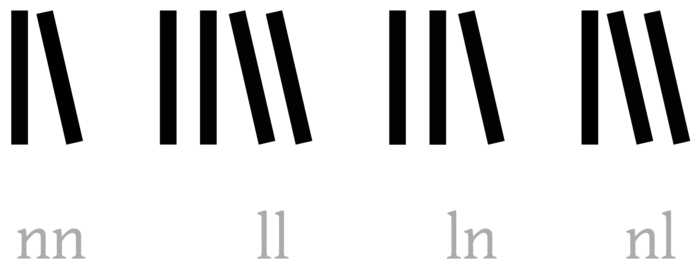
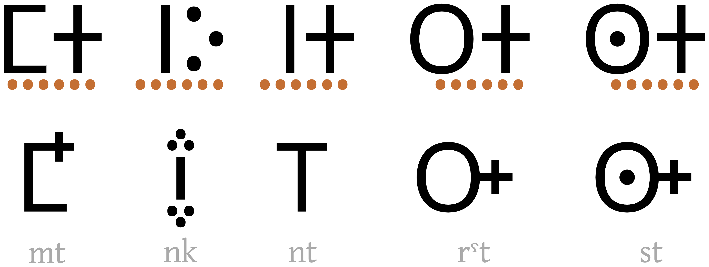
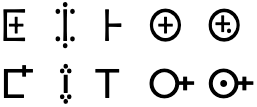

This page brings together basic information about the Tifinagh script, in particular the so-called Neo-Tifinagh writing system, and its use for the Standard Moroccan Tamazight and other Northern Berber languages. It aims to provide a brief, descriptive summary of the modern, printed orthography and typographic features, and to advise how to write Neo-Tifinagh using Unicode.
The Tifinagh alphabet is used to write the Berber languages of North Africa. It use has been promoted with royal support in Morocco, where it is taught in elementary schools and used in publications. It is also widely used by the Tuareg, the principal inhabitants of the Saharan interior, and is also used in Algeria, Mali and Niger, although alongside the Latin or Arabic alphabets.
A modern alphabetical derivative of the traditional script, known as Neo-Tifinagh, was introduced in the 20th century by the Institut Royal de la Culture Amazighe (IRCAM) .
There are many regional variations of the script and the standardised version proposed by IRCAM doesn't represent the full phonemic inventory of any particular language, but was proposed with a view to progressively unifying regional phonological variations in the orthography. It has officially been the only writing system for transcribing the Tamazight language in Morocco since 2003.
Standard Moroccan Tamazight is an ongoing project to create a standardized national Moroccan variety of Berber by combining the three major Moroccan Berber languages (Shilha/Tashelhiyt, Central Atlas Tamazight and Riffian/Tarifit). No-one speaks Standard Tamazight natively and it must be learned in school.
The Neo-tifinagh orthography is an alphabet, ie. both consonants and vowels are indicated in a straighforward way, and geminated consonants are simply indicated by repeating the consonant. (The Tuareg use Tifinagh also, but as an abjad.) See the table to the right for a brief overview of features for the modern Tamazight orthography.
Text runs from left to right for Tamazight (but Tuareg text runs right-to-left, and ancient Tifinagh symbols were sometimes written vertically, running from bottom to top).
Words are separated by spaces. The script is monocameral.
Other and older orthographies of Tifinagh, such as Tuareg orthographies, include a single vowel character, whose sound is determined by the preceding consonant. In other uses, diacritics are used to indicate vowels. They may also use conjunct forms to differentiate words that would otherwise be ambiguous.
Neo-Tifinagh is designed to show vowels (and therefore, alphabetic), however, other writing sytems such as Touareg and older variants are not.
The ancient Berber script used a single vowel symbol, read normally as a, but i after y, and u after w.u Some Tuareg orthographies display a single vowel letter at the end of a word.
The vowel letters of Neo-Tifinagh are:ws
ⵉ␣ⵓ␣ⴻ␣ⴰ
Epenthetic vowels
Certain consonant clusters are pronounced with a small, non-phonemic, epenthetic vowel (usually ə or ɨ, depending on the context. These are not written but are predictable. It is voiced before voiced consonants and voiceless before voiceless consonants. Alternatively it can be realized as a voiced or unvoiced consonant release. It also may be realized as a syllabic nasal, lateral, or r̩.@Wikipedia,https://en.wikipedia.org/wiki/Central_Atlas_Tamazight#Vowels
For more details, see @Wikipedia,https://en.wikipedia.org/wiki/Central_Atlas_Tamazight#Vowels.
ⵅⴷⵎ
ⵄⴰⴹⴹⵔ
ⵜⴱⵔⵔⵎⵏⵜ
Vowels in other orthographies
The Unicode block has two further vowel letters, used for Tuareg. ap
ⵦ␣ⵧ
Standalone vowels
Standalone vowels are written using ordinary vowel letters and no special arrangements.
ⴰⴱⵓⴱⴱⴰⵥ
Vowel sounds to characters
This section maps Tamazight vowel sounds to common graphemes in the Neo-Tifinagh orthography. Click on a grapheme to find other mentions on this page (links appear at the bottom of the page). Click on the character name to see examples and for detailed descriptions of the character(s) shown.
IRCAM defines the following set of characters for Neo-Tifinagh, which is a subset of the Unicode Tifinagh block designed to cater for Tarifit, Tamazight, and Tachelhit languages.ws
The extended IRCAM list includes 3 additional labioverlarised consonants, written as digraphs:
ⵅⵯ␣ⵇⵯ␣ⵖⵯ
Extended repertoire
The following letters are listed by IRCAM for use with 'extended' sounds. The first 6 are rotated versions of other characters. The last two are to represent foreign sounds.pa,30
ⵒ␣ⴲ␣ⵠ␣ⵝ␣ⴸ␣ⴺ␣ⴴ␣ⴿ
IRCAM's extended list also recognises 4 affricate sounds, which are commonly written using digraphs.pa,30
ⵜⵙ␣ⴷⵣ␣ⵜⵛ␣ⴷⵊ
In some fonts, these digraphs may be rendered using ligated forms. See also biconsonants.
Other consonants
The remaining consonants in the Unicode Tifinagh block are mostly used for modern Tuareg, but there are four others.
ⴾ␣ⵈ␣ⵞ␣ⴵ␣ⴶ␣ⵤ␣ⵋ␣ⵌ␣ⵆ␣ⵗ␣ⵘ␣ⵁ␣ⵂ␣ⵐ␣ⵑ
There is a significant amount of variation in the use of Tifinagh symbols between different regions.
A useful exploration of the differences ae.
Onsets
tbd
Finals
tbd
Consonant clusters
It is not uncommon to find clusters of 4 or more consonants without intervening vowels. Some words have no vowels at all.
Tamazight text written in Neo-Tifinagh typically displays consonants with no intervening vowels by simply putting them side by side.
The same applies for geminated consonant sounds.
ⵡⴰⵡⵊⴹⵎ
ⵜⴰⵎⵎⵏⵜ
ⴱⴷⴷⵍ
A few combinations of letters can create a little ambiguity, and fonts may apply some shaping to address that. See leaning.
Other languages written with the Tifinagh script, such as Touareg, apply additional shaping for certain consonants when they are adjacent. This is particularly helpful if those orthographies omit letters for vowel sounds. See tuareg_clusters.
Consonant length
tbd
Consonant sounds to characters
This section maps Tamazight consonant sounds to common graphemes in the Neo-Tifinagh orthography. Click on a grapheme to find other mentions on this page (links appear at the bottom of the page). Click on the character name to see examples and for detailed descriptions of the character(s) shown.
Sounds listed as 'infrequent' are those listed by IRCAM as extended phones, used for historical or foreign sounds.
Diacritic marks from other blocks have been used in some notations, to represent vowels and foreign consonants, eg. ⴵ̇aⵉ̉iːⴱ̂p
When two diacritics are shown above the base, they may be dispayed side by side rather than stacked,u eg. ⵉ̇̄eː
Numbers
Tifinagh uses ASCII digits.
Text direction
The Neo-Tifinagh writing system is written horizontally, and left-to-right.
Modern Tuareg is written horizontally also, but right-to-left,s and reverses the glyphs of the characters, eg. ⴰⵙⵉⴹⵢⴰⵙ⵰ would be written ⴰⵙⵉⴹⵢⴰⵙ⵰This is not possible in plain text, and is achieved here by applying a CSS transform.
Early inscriptions of Tifinagh were written vertically, bottom-to-top, as well as horizontally left-to-right and right-to-left. Sometimes boustrophedon was used.
In Neo-Tifinagh, the letters 2D4D and 2D4F are easily distinguishable, even if placed side by side or doubled, because of the crossbar on the former.
In other Tifinagh orthographies, however, the letter ⵍ [U+2D4D TIFINAGH LETTER YAL]
may be written as 2 vertical lines without a crossbar. This could be mistaken for a geminated
ⵏ [U+2D4F TIFINAGH LETTER YAN]
or when they appear next to each other it may not be clear which is which. A few techniques are used to address this, including varying the space between bars, changing the height of some bars, or angling the secon glyph to the left in order to make the difference clear (see fig_leaning).u

Examples of leaning shapes.
This is purely a font-based feature. The character codes remain the same. And it is not needed for modern Neo-Tifinagh, where the YAL glyph has a crossbar.
Clusters in Tuareg
Consonant clusters may be displayed as ligated forms in Tuareg.u This is particularly useful in text that is not fully vowelled. There are two ways to achieve this in Unicode-encoded text.
⵿
When it is considered obligatory to indicate a bi-consonant, ⵿ [U+2D7F TIFINAGH CONSONANT JOINER] is added between the two consonants. If the font supports bi-consonant shapes, the joiner is not shown, but the consonants are ligated. If the font doesn't support the joiner, it should be displayed visually below the 2 consonants.
 Examples of ligated biconsonants. The top row shows what they would look like if the font doesn't support ligatures; the visible joiner is highlighted. The lower row shows corresponding ligatures.
The second approach uses [U+200D ZERO WIDTH JOINER] rather than the Tifinagh joiner, and serves as an optional hint to the font. The fallback is simply the two consonants side by side.
The ligated shapes may vary from font to font.

The ligated biconsonants shown above, rendered using two different fonts (top, Tagmukay; bottom, Noto Sans Tifinagh).
Old Tifinagh texts don't show gemination.
Multiple diacritics
Context-based positioning doesn't occur in standard Tamazight, since there are no combining diacritics.
When special notations combine multiple diacritics above consonants to represent vowels, however, the diacritics are presented side by side, rather than stacked.
Side by side rendering of diacritics to represent vowels in special notations.
Graphemes
Grapheme clusters
tbd
Punctuation & inline features
Word boundaries
In Neo-Tifinagh, words are separated by spaces. Other variants often don't.
Phrase & section boundaries
,␣;␣:␣.␣?␣!
Tifinagh uses western punctuation.u
phrase
, [U+002C COMMA]
; [U+003B SEMICOLON]
: [U+003A COLON]
sentence
. [U+002E FULL STOP]
? [U+003F QUESTION MARK]
! [U+0021 EXCLAMATION MARK]
In some areas (such as Niger, Mali, Algeria pcs) ⵰ [U+2D70 TIFINAGH SEPARATOR MARK] (tazarast) is used for phrase and sentence breaks.s In right to left text, this character should be mirrored, however this isn't currently possible in plain text Unicode.


 [
[